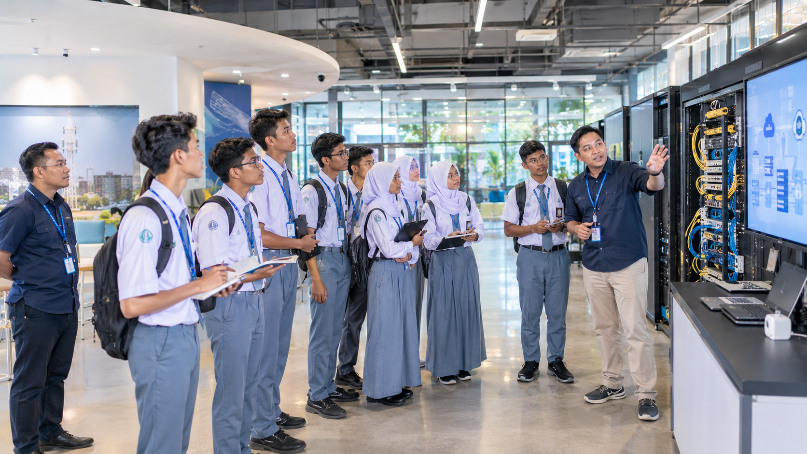

SMK GAMA Raih Juara 1 LKS Tingkat Provinsi
Tim Rekayasa Perangkat Lunak (RPL) SMK GAMA berhasil meraih juara 1 dalam Lomba Kompetensi Siswa (LKS) tingkat Provinsi Jawa Timur. Prestasi ini menjadi bukti kualitas pendidikan di SMK GAMA.
Baca Selengkapnya →
Kunjungan Industri ke PT. Telkom Indonesia
Siswa jurusan Teknik Komputer dan Jaringan (TKJ) SMK GAMA melakukan kunjungan industri ke PT. Telkom Indonesia untuk mempelajari infrastruktur jaringan dan teknologi komunikasi terkini.
Baca Selengkapnya →
Pendaftaran PPDB 2026/2027 Dibuka
SMK GAMA membuka pendaftaran siswa baru untuk tahun ajaran 2026/2027. Pendaftaran dibuka mulai 1 Oktober 2026 dengan berbagai program keahlian unggulan.
Baca Selengkapnya →
SMK GAMA Juara Umum O2SN Tingkat Kabupaten
SMK GAMA meraih juara umum dalam Olimpiade Olahraga Siswa Nasional (O2SN) tingkat Kabupaten Bojonegoro dengan meraih 5 medali emas, 3 perak, dan 2 perunggu.
Baca Selengkapnya →Seminar Kewirausahaan untuk Siswa Kelas XII
SMK GAMA menggelar seminar kewirausahaan untuk siswa kelas XII dengan menghadirkan pengusaha sukses dari Bojonegoro sebagai pembicara.
Baca Selengkapnya →
SMK GAMA Terima Bantuan Lab dari Kemdikbud
SMK GAMA menerima bantuan laboratorium komputer dari Kementerian Pendidikan dan Kebudayaan sebagai bentuk dukungan terhadap peningkatan kualitas pendidikan vokasi.
Baca Selengkapnya →